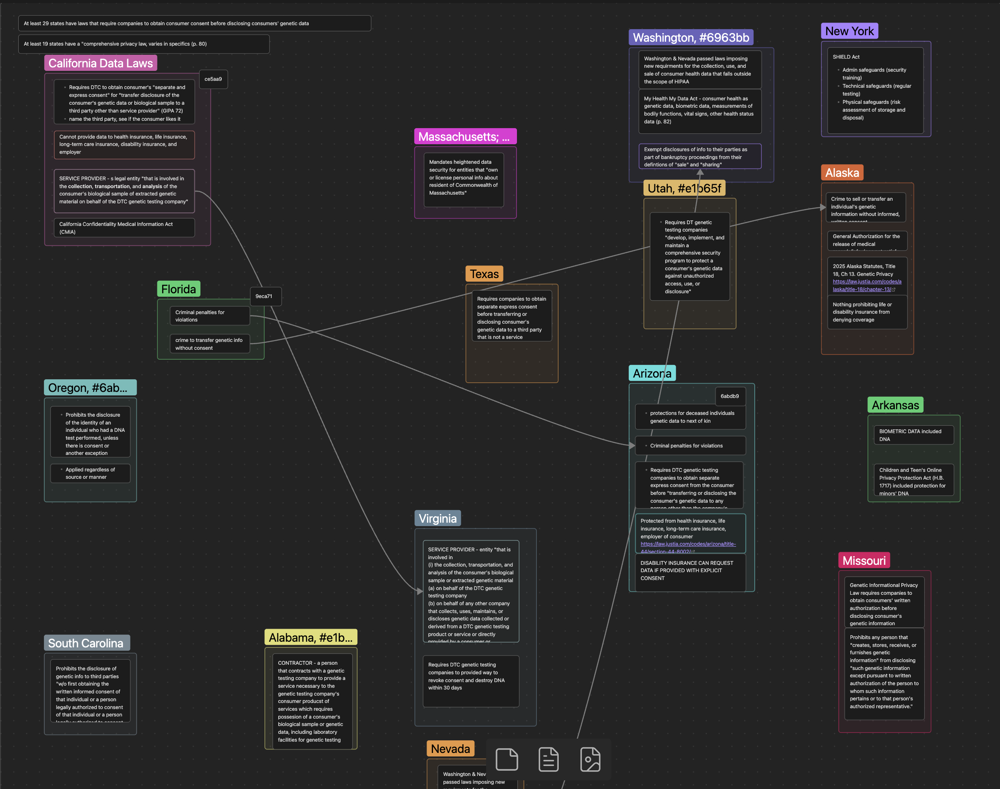
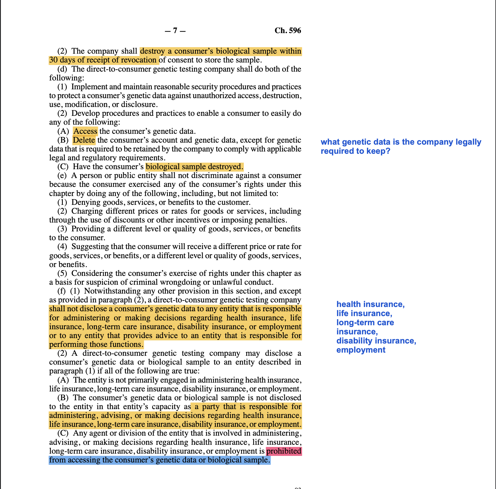

On the 23 & Me Bankruptcy case, the first third of the 200+ page document discusses dark patterns. These are tactics that manipulate a users consent. I became interested in the subtleties of informed consent versus express consent versus written consent. Other definitions came to light as well. States like California have opt-in restrictions for third parties, this does not include service providers. California has a definition for service provider but no definition for third party. Some states are the opposite. Some states have no definitions for either. There is an appendage where it discusses consent practices.
Using the appendage I made a visual map of key characteristic laws for major privacy states.

I started noticing patterns like "access," "delete," "revoke consent," "destroy sample" -- all "rights" based laws. These laws seemed to repeat among several states. I highlighted patterns that occurred as well as highly specific protections. Michigan for example had a law based on foreign adversaries. I drew arrows where I noticed trends. Arizona has protections preventing deceased people from having their data used.
From here on, I downloaded the mentioned genetic privacy acts: California's Genetic Privacy Information Act, Washington's My Health My Data Act, New York's SHIELD Act. The list kept expanding. Together these downloads sum up to 466 pages. Some states showcase their laws in a simple pdf form with a list of changes depending on the year. Other states' laws are hidden on early 2000s style html pages, like Arizona's private right of action page A.R.S 44-8004 which has no backlogs and all together 47 words. For these states I found that a link to the law on a citations page sufficed. Other's like Arizona's and Alaska's laws where so succinctly laid out, and inaccessible in a pdf form, that I opted for making a note of the web links.
